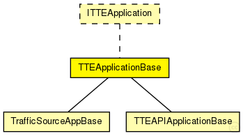

This documentation is released under the Creative Commons license
This documentation is released under the Creative Commons licenseTODO auto-generated module
The following diagram shows usage relationships between types. Unresolved types are missing from the diagram. Click here to see the full picture.
The following diagram shows inheritance relationships for this type. Unresolved types are missing from the diagram. Click here to see the full picture.
| Name | Type | Description |
|---|---|---|
| TrafficSourceAppBase | simple module |
TODO auto-generated module |
| TTEAPIApplicationBase | simple module |
TODO auto-generated module |
| TTETestApp | simple module |
TODO auto-generated module |
| Name | Type | Default value | Description |
|---|---|---|---|
| buffers | string | "" |
Comma seperated list of buffer modules the application is allowed to use |
| buffers_manual | bool | false |
| Name | Value | Description |
|---|---|---|
| class | TTEApplicationBase |
| Name | Direction | Size | Description |
|---|---|---|---|
| TTin | input | ||
| RCin | input | ||
| schedulerIn | input |
Input gate for the incoming SchedulerActionTimeEvent messages |
|
| syncIn | input |
Input gate for the incoming SynchronizationNotification messages |
// // TODO auto-generated module // simple TTEApplicationBase like ITTEApplication { parameters: @class(TTEApplicationBase); //Comma seperated list of buffer modules the application is allowed to use string buffers = default(""); bool buffers_manual = default(false); gates: input TTin @directIn @labels(CTFrame); input RCin @directIn @labels(CTFrame); //Input gate for the incoming SchedulerActionTimeEvent messages input schedulerIn @directIn; //Input gate for the incoming SynchronizationNotification messages input syncIn @directIn; }
This documentation is released under the Creative Commons license